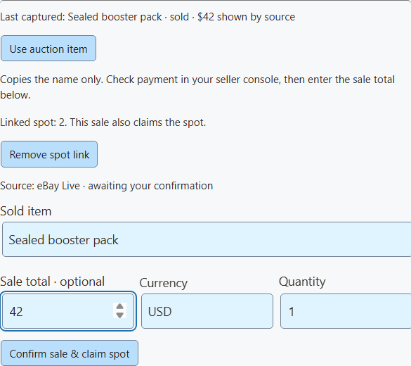
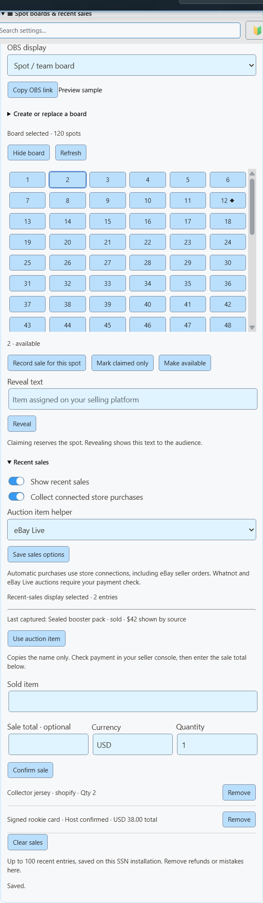

Настройте доску мест за 5 шагов
- В SSN откройте Monetization → Spot boards & recent sales («Монетизация → Доски мест и последние продажи»).
- Выберите Нумерованные плитки. Для сетки 20 × 6 задайте 120 мест и 20 столбцов. Нажмите Создать доску.
- Нажмите Копировать ссылку OBS и добавьте её в OBS как Источник «Браузер» с размером 1920 × 1080.
- Когда место продано, нажмите его плитку. Проверьте оплату, затем нажмите Записать продажу для этого места и подтвердите продажу.
- Чтобы показать полученный товар, введите его в Текст раскрытия и нажмите Раскрыть.

| Я хочу… | Нажмите |
|---|---|
| Зарезервировать место без записи продажи | Только отметить занятым |
| Исправить ошибочно отмеченное место | Сделать доступным |
| Вернуть оплату места и освободить его | Возврат и повторное открытие (также удаляет связанную продажу) |
Командные брейки
В командном брейке открытые карты распределяются по команде, игроку или другому именованному месту.
- Выберите Плитки команд.
- Вставьте названия команд, по одному в строке. Список определяет число мест.
- Отмечайте каждое купленное место занятым. Раскройте его, когда будете готовы.

Во время шоу Whatnot или eBay Live
- Откройте эфир в SSN и включите Capture Stream Events («Захватывать события трансляции»). Для Whatnot нужна страница эфира с видимой нижней панелью аукциона. eBay Live работает со страницы чата или эфира.
- В разделе Последние продажи, установите Помощник по товару аукциона на Whatnot или eBay Live. Нажмите Сохранить параметры продаж.
- Когда товар продан, нажмите Использовать товар аукциона чтобы скопировать название.
- Проверьте товар и оплату на торговой площадке. Затем введите сумму продажи и валюту.
- Для места нажмите его плитку, затем Записать продажу для этого места. Кнопка подтверждения изменится на Подтвердить продажу и занять месточто фиксирует оба действия сразу.
- Добавьте текст раскрытия, когда будете готовы показать товар.


| Я хочу… | Что сделать |
|---|---|
| Показывать продажи на экране | Включите Показывать последние продажи. Используйте второй источник OBS, если хотите показывать доску и продажи одновременно. |
| Возврат продажи и освобождение места | Возврат и повторное открытие для этой продажи. |
| Удалить только запись продажи | Удалить |
Новая доска начинается с чистого листа. Продажи старой доски остаются с ней.
Захват эфира и подключение магазина
Захват Whatnot и eBay Live передаёт товар, ставки и состояние аукциона. Отдельное Подключение продавца eBay получает оплаченные заказы для выбранных объявлений и может самостоятельно заполнять последние продажи. Не подтверждайте их ещё и вручную, иначе появятся дубли. Другие автоматические источники: Shopify, Fourthwall, Ko-fi и Buy Me a Coffee.
Помощник хранит только последний товар выбранного сайта. Он очищается через пять минут без обновлений и при перезапуске SSN. Если открыто несколько эфиров, перепроверьте товар. Если помощник пуст, после включения дождитесь нового обновления аукциона.
eBay: проверьте состояние оплаты в консоли продавца · Whatnot: неудачные платежи аукциона
Показывать последние продажи
Оставляйте реальные покупки на экране после исчезновения уведомления. Выберите короткий список, стену из шести карточек или полосу.

| Откуда поступают продажи | Как настроить |
|---|---|
| Ваш интернет-магазин | Включите Показывать последние продажи и Собирать покупки подключённых магазинов, затем нажмите Сохранить параметры продаж. Работает с новыми покупками из Shopify, подключения продавца eBay, Fourthwall, Ko-fi и Buy Me a Coffee. |
| Продажи, подтверждённые вами | Введите товар и при желании сумму и валюту. Нажмите Подтвердить продажу. Подходит для Whatnot, eBay Live или личных продаж после проверки оплаты. Они отображаются как Подтверждено ведущим. |
Для исправления ошибок или возвратов нажмите Удалить для этой продажи. Нажмите Очистить продажи чтобы начать с чистого листа для нового эфира.
Цены, история и конфиденциальность
Потоки магазинов не всегда содержат цены, поэтому в автоматических записях цена пустая. Чтобы показать цену, удалите запись и подтвердите её сами. Для нескольких товаров укажите общую сумму записи, а не цену каждого. SSN никогда не подставляет цену объявления, высшую ставку или сумму пожертвования.
SSN хранит последние 100 продаж на этом компьютере даже после перезапуска. Сбор начинается с момента включения; старые заказы не импортируются. Повторная доставка игнорируется: сохраняются последние 2000 ID. Возвраты нужно удалять вручную.
Имена покупателей, адреса, платёжные данные и нераскрытые товары никогда не показываются. Демо-ссылки используют явно помеченные вымышленные данные.
Показ в OBS
- В элементах управления доской выберите вид: Доска мест/командили последние продажи списком, стеной или полосой.
- Нажмите Копировать ссылку OBS. Добавьте её как браузерный источник 1920 × 1080. Пустые области прозрачны, поэтому камера видна за ними.
- Не закрывайте SSN. Изменения появляются сразу.


Предпочитаете управление из OBS? Панель Панель управления товарами OBS содержит те же кнопки.
Дополнительные параметры ссылки
| Добавить к ссылке | Что делает |
|---|---|
&view=board, sales, wall, или ticker | Выбирает макет. |
&limit=6 | Показывает до шести последних продаж (максимум 24). |
&prices=0 | Скрывает цены. |
&label=Recently%20sold | Задаёт заголовок продаж. |
&onlytype=shopify,ebay | Показывает продажи только из этих источников. |
Сохраните сеанс, пароль и параметры сервера из скопированной ссылки. Если подключения нет или нечего показывать, оверлей остаётся прозрачным. Сообщения настройки никогда не видны зрителям.
Что это за сетки в прямых эфирах?
| Формат | Что это |
|---|---|
| Места команд | Покупатели оплачивают долю в брейке карт, например карты одной команды. Доска отслеживает, кто занял каждое место. См. Руководство Whatnot по брейкам и Руководство eBay по брейкам. |
| Раскрытие по номерам | Сетка с номерами или шарами может отслеживать распределённые товары. Точные правила зависят от эфира. Surprise Sets в Whatnot распределяет товары после продажи места. См. Руководство Whatnot по Surprise Sets. |
API и Event Flow
Большинство пользователей могут это пропустить. Раздел для кнопок Stream Deck, скриптов и автоматизации.
Команды API и Event Flow
Эти элементы управления расширяют существующий commerceControl API. SSN, пользовательские действия API Stream Deck и необязательный док OBS читают один и тот же getCommerceState ответ.
{"action":"commerceControl","value":{"command":"boardSpot","data":{"id":"12","status":"claimed"}}}| Команда | Поля в data |
|---|---|
boardSave | title, style, columns, count или labels, разделённые переносами строк |
boardSpot | id, status, result |
boardVisibility | visible |
saleAdd | title; необязательно amount, currency, quantity, platform; необязательно boardId и spotId для занятия места |
saleRemove | id; необязательно reopenSpot |
salesClear | нет |
salesSettings | visible, automatic; необязательно auctionSource: whatnot, ebayили пустая строка |
Эти изменения не отправляют события покупок и не запускают платные награды.
В разделе Event Flowиспользуйте Товары и поддержка действие. Выберите команду доски или продаж и заполните Поля доски / продаж. Текстовые значения принимают переменные, например {subtitle}. Для действий продажи используйте подтверждённое событие покупки. Если поток добавляет продажи вручную, выключите автоматический сбор, чтобы избежать дублей.